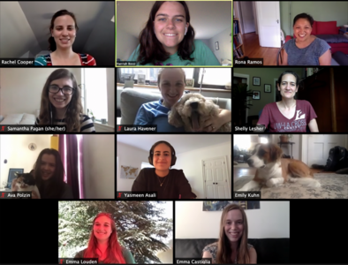
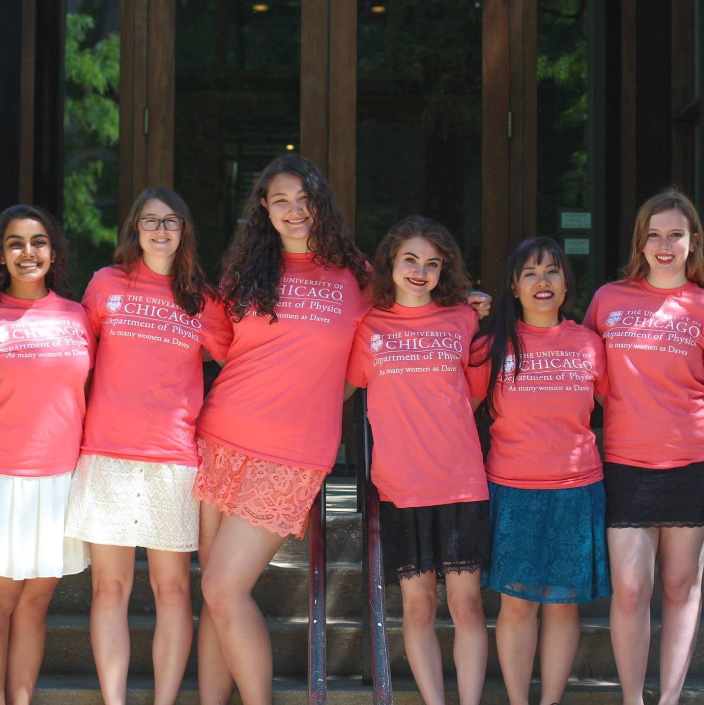
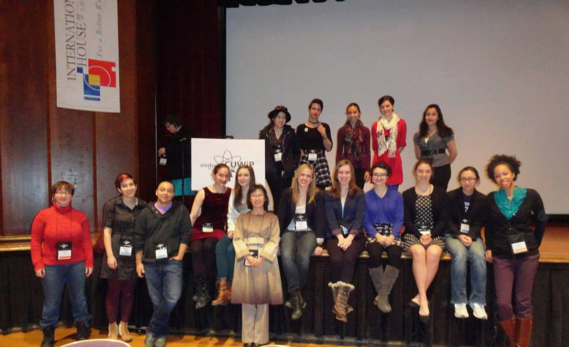
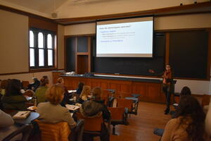
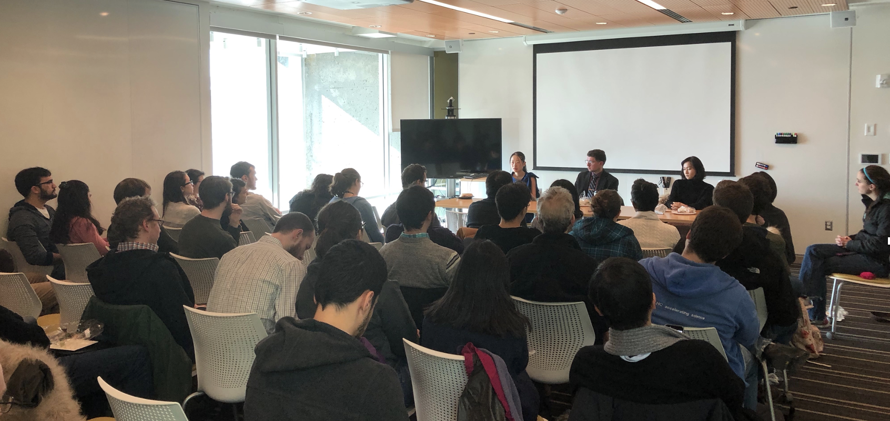
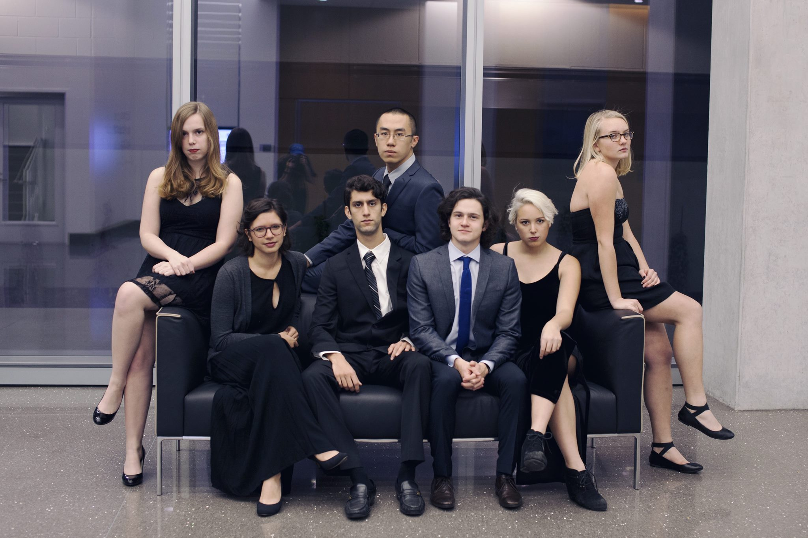
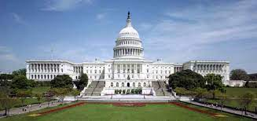
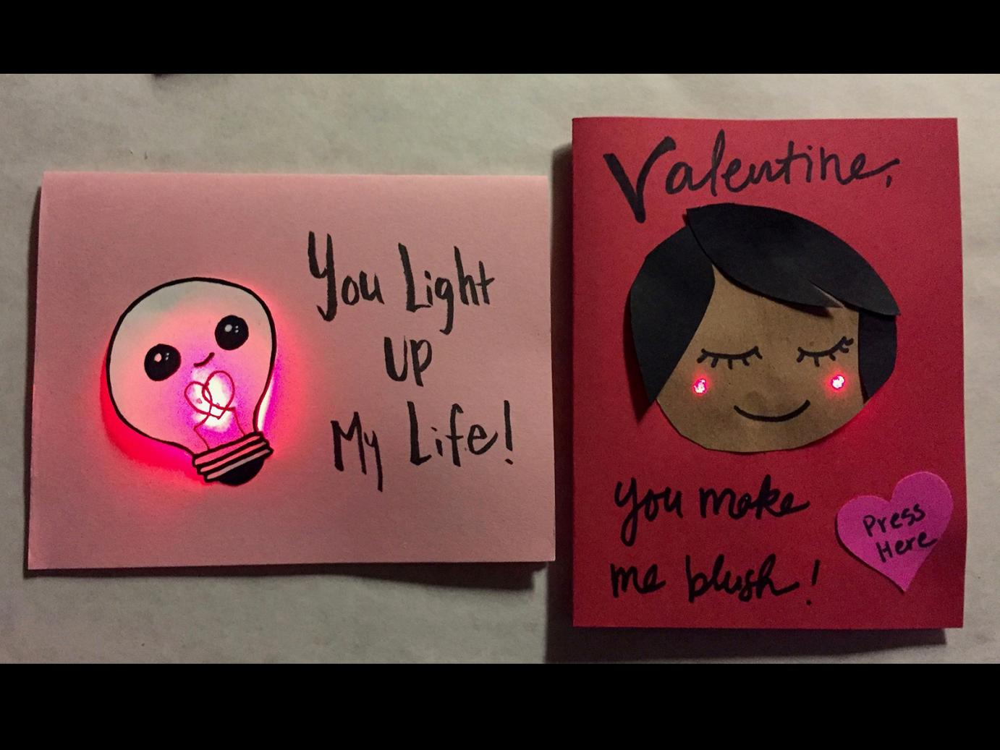
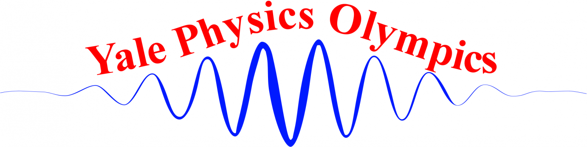

Women in Physics
Yale Graduate Women in Physics+, Chair, 2018-2021
As chair, I transformed the WIP+ group from being a social lunch group to having a full slate of events run by a board of graduate students in response to a need I saw in our group. Women would bring up excellent ideas for increasing diversity and inclusion in our chats, or mention recent papers or Op-Eds about diversity in physics, but they never progressed into action or thoughtful discussion. To change this, I created an advocacy chair, which led to WIP's creation of a mentorship program connecting undergraduates, graduates, postdocs and faculty, and continued efforts to display achievements of women physicists in the department halls. I also established an Allies group and led monthly discussions on diversity initiatives and intersectionality in physics. In addition, I maintained WIP as a space where women could seek support from each other and have fun at social events like apple picking, monthly coffee and bagel chats, and our annual Holiday party.
uChicago Women in Physics, Vice President, 2015, Secretary, 2014
 As a member of the board of SWIP at uChicago, I organized community building events like our Annual Hot Chocolate Night. To connect undergraduate women with potential research advisors, we hosted Pizza with Professors each spring
Conference for Undergraduate Women in Physics
 During my first year at UChicago, I attended the Conference for Undergraduate Women in Physics (CUWiP) at UIUC and was extremely inspired to be surrounded by so many successful women physicists and I have worked to support CUWiP events ever since. I volunteered at the 2014 CUWiP held at UChicago, where I set up our conference rooms, ran microphones during talks, and made liquid nitrogen ice cream for the High School Program. As a graduate student at Yale in 2020 I again volunteered, this time moderating a panel titled ``Careers Tangential to Physics", as well as running a particle physics research lunch discussion.
Professional Development
Equity in the Job Search Symposium, Co-Chair, 2018-2021
 I was a co-chair for a board of ten Yale graduate students and postdocs and led the planning of three annual day-long EJS symposia where I invited keynote speakers to discuss research on gender inequality in STEM, held panels about mentoring and promoting equity at Yale, and hosted workshops on negotiation and public speaking to empower women in their careers. I ran the fundraising efforts in both 2019 and 2020 and raised over $7000 to host each symposia. In 2020, I helped convert the symposium to being fully virtual in just two weeks!
Yale Physics Professional Development Organization, Seminar Organizer,2020-2021
 YPPDO is a student run organization to help prepare fellow graduate students and postdocs for the job search. I hosted a full year of virtual events focused on how to get industry and policy jobs as well as postdoctoral and faculty positions. I made sure to invite speakers from a diverse range of identities and backgrounds. Seminars I planned included “Female Alumnae in Academia and Industry” - a panel with recent graduates in various careers, “The Academic Job Search and Application” run by Professor Bonnie Fleming, and a panel with Postdoctoral Fellows. I also hosted virtual Coffee Chats over zoom with various Yale alumni including, a Facebook AI Researcher, the Sarah Lawrence Physics Department Chair, Science Policy Fellows, and a US Air Force Quantum Information Scientist.
Miscellaneous
uChicago Society of Physics Students, Outreach Officer, 2014-2016
. As a member of the board of SPS (pictured on the left!), I helped coordinate weekly talks given by faculty geared towards an undergraduate level and social events such as the Physics P$\hbar$ormal each winter to celebrate students' accomplishments and hard work all quarter.
US LHC Users Association DC Trip, Volunteer,2019 & 2020

Girl's Science Investigation, Volunteer, 2016-2019
,
Yale Physics Olympics, Volunteer,2018 & 2019
